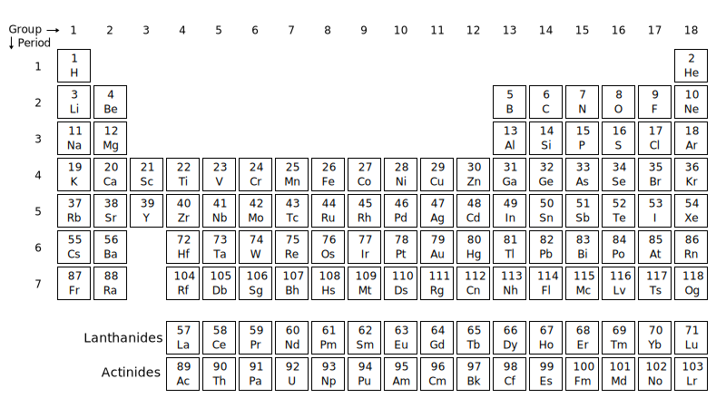
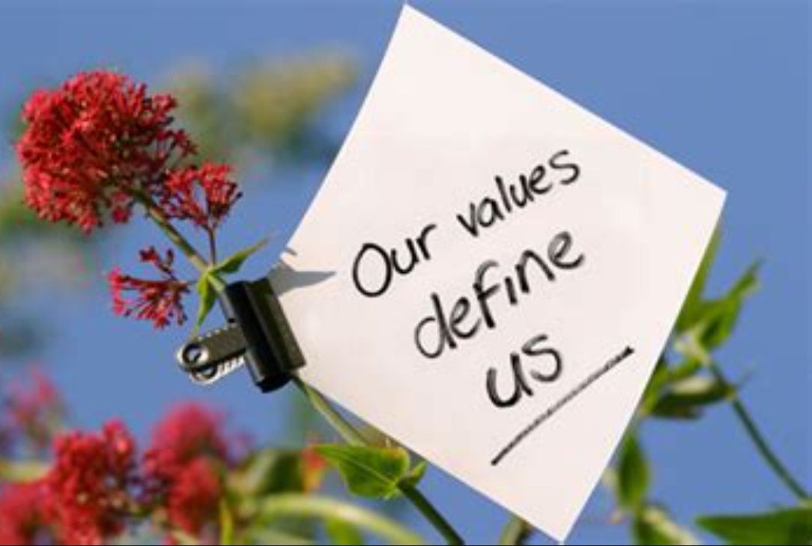
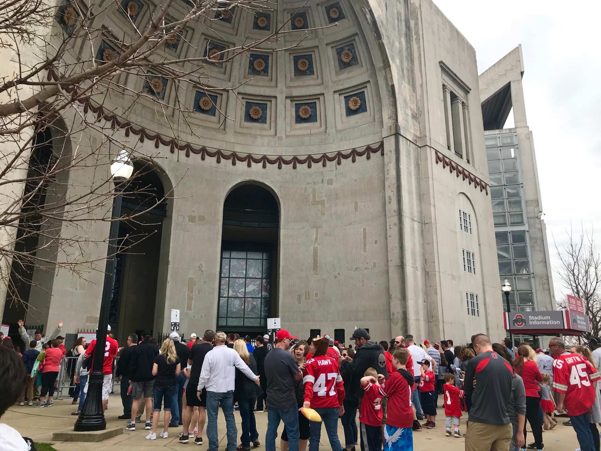
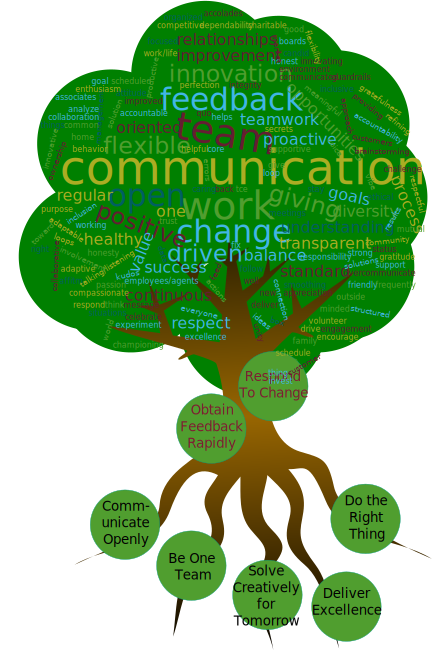
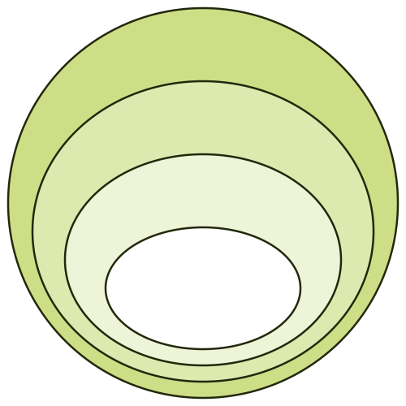
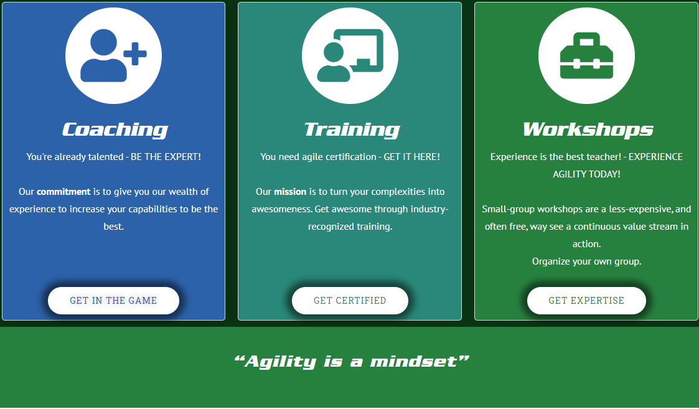

Fostering
|
 John Riley
Process Improvement Coach
|
 [CMC logo "Team CMC"] [CMC logo "Team CMC"] |
 [Mavon Banner] [Mavon Banner] |
### Share Your Experience [replace with Mavon channels?]
---
 @ReadySetAgile
@ReadySetAgile @ReadySetAgile
@ReadySetAgile https://www.facebook.com/ReadySetAgile/
https://www.facebook.com/ReadySetAgile/ https://www.linkedin.com/company/ready-set-agile/
https://www.linkedin.com/company/ready-set-agile/
### Got a question?
---
### What to expect in this workshop
---
### Our role as facilitators
---
:02
Exercise: Why are you here?
### Understanding Culture
---


Let's break
it down!
it down!

Start with
values
values
Environment
Influences
Behavior
Influences
Behavior

Simple rules
Influence
Behavior
Influence
Behavior
Shared
understanding
is most
important
understanding
is most
important

Healthy Cultures
Thrive!
Thrive!

:06
Exercise: What qualities make your culture healthy?
### Cultural Awareness
---
Values
Purpose
Principles
Your Path
:06
Exercise: Do you know Mavon's values?
Mavon's Values
Agile's Purpose
:10
Exercise: How does Mavon promote a healthy culture using its values and agility's purpose?
### Fostering
---

#### Depicting Culture
---
-
Tree

-
Onion

- Building
- Iceburg
### Services at www.ReadySetAgile.com
---

### Thank you!
---

john@ReadySetAgile.com - John Riley
@ReadySetAgile @ReadySetAgile https://www.facebook.com/ReadySetAgile/ https://www.linkedin.com/company/ready-set-agile/